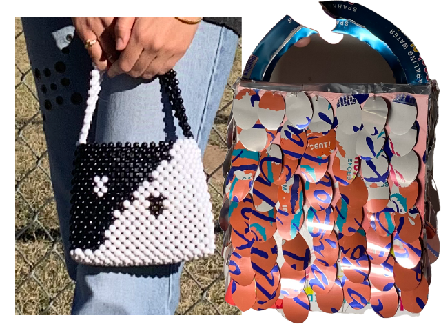
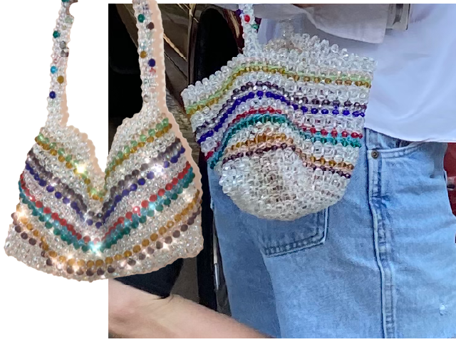
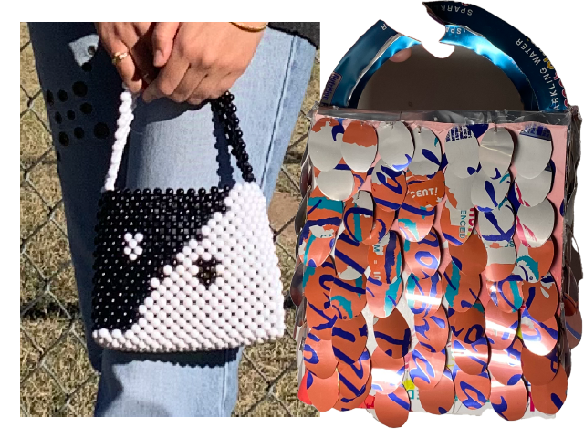
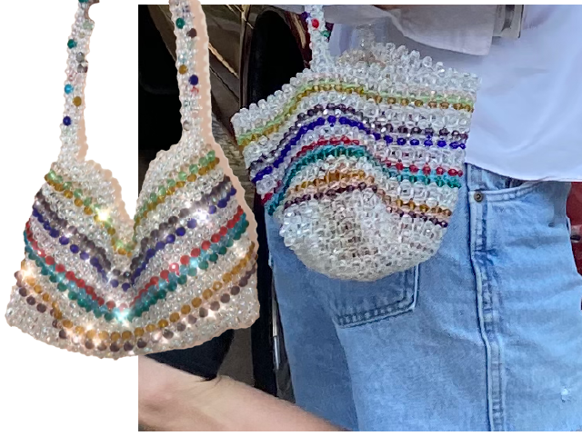

material practice
My design thinking is grounded in physical making. Sewing, knitting, beading, and garment reconstruction inform how I approach structure, modular systems, and iterative experimentation in digital spaces.
modular beaded bag series
A series of hand-beaded bags constructed using fishing wire and modular bead grids. Each piece explores repetition, tension, and pattern logic — translating pixel-based thinking into physical form.
 



garment reconstruction & knitwear
Experimental garments exploring textile transformation, reuse systems, and surface intervention. Projects include knitted checkerboard structures, reconstructed flare pants from a throw blanket, photo-gallery jeans, and hand-dyed dresses constructed from reclaimed bedding.